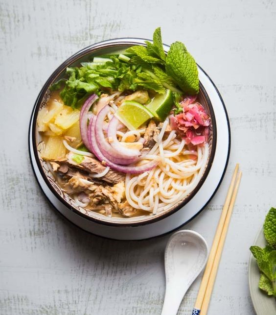

I was born in Pulau Pinang, Malaysia, in 2004 and have been living here ever since...
More information about Penang
About
Penang is a state located on the northwest coast of Peninsular Malaysia by the Malacca Strait. Known for its diverse culture, rich history, and vibrant food scene, Penang offers a mix of modernity and tradition.
History of Penang
In the late 18th century, the island was ceded to the British East India Company by the Sultan of Kedah in exchange for military protection against Siamese and Burmese invaders.
Captain Francis Light took possession of Penang Island in 1786 and established George Town.
Facts About Penang
Penang consists of two parts: Penang Island, where the capital city George Town is located, and Seberang Perai on the mainland.
Penang is known as the "Silicon Valley of the East" due to its robust electronics and semiconductor industries.
- A UNESCO World Heritage Site, George Town is famous for its well-preserved colonial architecture, street art, and cultural heritage.
- Notable sites include Fort Cornwallis, Khoo Kongsi Clan House, and the Pinang Peranakan Mansion.
2. Visit Penang Hill
- Enjoy panoramic views of the island from the top of Penang Hill.
- Accessible by the Penang Hill Railway, it's a popular spot for hiking, sightseeing, and enjoying the cooler climate.
3. Experience Penang's Street Food
- Penang is renowned for its street food, particularly in places like Gurney Drive, New Lane Hawker Centre, and Chulia Street Night Hawker Stalls.
- Must-try dishes include Char Kway Teow, Assam Laksa, and Penang Rojak.
4. Relax at Batu Ferringhi:
- This beach area is known for its sandy shores, water sports, and vibrant night market.
- This beach area is known for its sandy shores, water sports, and vibrant night market.
most popular and iconic foods in Penang

Penang Assam Laksa
A tangy and spicy noodle soup made with mackerel fish, tamarind, lemongrass, and various spices. It's usually served with rice noodles, topped with fresh vegetables, and a spoonful of prawn paste.
Nasi Kandar
Originating from Indian Muslim cuisine, this dish features steamed rice served with a variety of curries and side dishes. The mix of flavors and spices is what makes it a favorite.
Chendol
A popular dessert made with shaved ice, green rice flour jelly, red beans, coconut milk, and palm sugar syrup. It's perfect for cooling down in Penang's tropical climate.